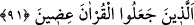
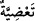

91. Onlar, Kur’an’ı bölüp ayıranlardır.
Ey Muhammed! “Onlar” sana indirilen “Kur’an’ı bölüp ayıranlardır” parça parça
edenlerdir. Yâni, onlar inâd ve düşmanlık îcâbı ‘Bunun bir kısmı Tevrat ve İncil’e
uygun, bir kısmı ise onlara muhâlif ve bâtıldır!’ demek sûretiyle hak ve bâtıl olarak
ikiye ayırdılar. Bu mânâ İbn Abbas (r.anhümâ)’dan rivâyet edilmiştir.
Maksad kitaplar arasındaki benzerliği değil, verilmeleri/inidirilmeleri arasındaki
benzerliği ortaya koymaktır. Nitekim Halil İbrâhim (a.s.)’a getirdiğimiz salâvâtlarda da
benzer bir durum söz konusudur. Çünkü salevâttaki benzetmede Allah’ın İbrâhim’e ve
âilesine ihsân etmiş olduğu rahmet, Hz. Peygamber’e ve âilesine ihsân ettiğinden daha
tam ve kâmil olduğu için değil, sâdece varlık sahnesine çıkış bakımından önceliği
bulunduğu içindir. Bu bakımdan teşbihde birincisi ile ilgili olan şeyin ikincisi ile ilgili
olan şeyden üstün olması bir yana kendisine benzetilenin (müşebbehün bih)
benzetilenden (müşebbeh) daha üstün olduğunu gösteren bir şey yoktur. Çünkü Hz.
Peygamber’e, kendisinden önceki ve sonraki hiçbir kimseye benzeri verilmeyen şeyler
verilmiştir.
Kur’ân’ın çeşitli bölümlere ayrılması, Yüce Kur’an’a revâ gördükleri bu tavrın son
derece çirkin bir fiil olduğunu açıkça ifâde etmek maksadıyle, normal bir gruplandırma
ve parçalara ayırma fiiliyle değil, -ki bu iki fiil birbirine benzer parçaların oluşturduğu
bütünleri parçalara ayırmanın bütüne zarar vermeyeceği durumlar için kullanılır- ruh
sâhibi bir varlığın parçalarını, onun hayâtına ve artık o isimle anılmasına son vermeyi
gerektirecek bir şekilde organlarını birbirinden ayırma anlamındaki “__WORD__ ta’dıye”
fiiliyle ifâde edilmiştir.
Bir kısım âlimler, âyetteki ‘bölüp ayıranlar”ın Velid b. Mugîre tarafından gönderilen
on iki yahut on altı kişi olduğunu söylerler. Bunlar, hac mevsimi geldiğinde Mekke’nin
giriş-çıkış noktalarına dağılıp buralara çöreklenen ve hacılar Mekke’ye geldiği zaman:
‘Sakın falanca adama aldanmayın, o cinlenmiş biridir’; bir başkası:
‘O, bir kâhindir!’; bir diğeri:
‘O bir falcıdır!’; bir diğeri:
‘O, bir şâirdir!; ‘bir diğeri:
‘O, bir büyücüdür!’ diye karalayıp tezyîf ederek insanları Hz. Peygamber (s.a.)’e
uymaktan alıkoyan kimselerdir. Cenab-ı Hak bunları Bedir savaşında ve bu savaştan
önce çeşitli musîbetlerle helâk etmiştir.
Mânâ şöyledir: Yâni Kur’an’ı şiir, büyü, kehânet ve öncekilerin masalı diye parça
parça eyleyen bu bölücüleri, bölücülere indirdiğimiz, yâni indirecek olduğumuz şeyler
hususunda uyar! Burada olması beklenen bir şey, tıpkı olmuş bir şey gibi anlatılmış
oluyor. Bu da olacak bir şeyi olmuşçasına haber vermek demek olduğu için Kur’an’ın
mu’cizevî yönlerinden biridir. Âyetin en açıkça görünen anlamı budur. İbn İshâk bu
anlamı zikrettiği gibi, İbn Asâkir’in et-Tekmile’sinde de aynı husûs mevcûddur.